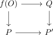

gustav - more on operads 2
Aspects
- o-monoidal category compatible with k-colimits
- morphism of cartesian patterns with unique lifting of inerts
Suppose $f: \mathcal{O} \rightarrow \mathcal{P}$ has <unique lifting of inerts> and $\alpha: P \rightarrow P'$ in $\mathcal{P}$ Then we get

factorization.
Then lift $f(O) \rightarrow Q$ to $O \rightarrow O'$ under hthe unique lifts
- o-monoids as localization
- recognition principle for O and P monoids
- extendable morphism induces monadic adjunction
Suppose $f: \mathcal{O} \rightarrow \mathcal{P}$ is <exact> and essentially surjective functor Then
- $M: \mathcal{P} \rightarrow \mathrm{An}$ is a \(\mathcal{P}\)-monoid if and only if $f^*(M)$ is an \(\mathcal{O}\)-monoid
- the adjunction
\begin{displaymath}
\begin{tikzcd}
\mathrm{Mon}_{\mathcal{O}}(\mathrm{An}} & \mathrm{Mon}_{\mathcal{P}}(\mathrm{An}}
\end{tikzcd}
\end{displaymath}is a <monadic>
Proof
1)
2)
- by Bar Beck Lurie we need to show
a) $f^*$ is conservative b) $\mathrm{Mon}_{\mathcal{P}}(\mathrm{An})$ has colimits of \(f^*\)-split simplicial objects and they are preserved by $f^*$
other
- Suppose $\mathcal{C}^{\otimes}$ is a $\mathcal{P}$ monoidal category and $f: \mathcal{O} \rightarrow \mathcal{P}$ is an extendable morphism of cartesian patterns.
Then
admits an infinity left adjoint where
- Let $\mathcal{V}^{\otimes}$ be a presentable P-monoidal category and $f: \mathcal{O} \rightarrow \mathcal{P}$ be extendable morphism of cartesian patterns. Then
has a infinity left adjoint $f_{!}$ and
other
Suppose $\mathcal{O}$ is a extendable cartesian pattern, and $\mathcal{V}^{\otimes}$ is a presentable o-monoidal category. Then
hsa a infinity left adjoint satisifying